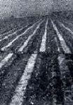

Seismology Trivia - Answers Page
A sketch map of a left lateral fault with an opening bend.
The fault bend here results in a basin filled by a lake.
 A seismogram, the paper recording from a seismograph, showing the P-wave first and the S-wave second. The first waves to arrive, and thus with the highest velocity, were termed primae, Latin for primary or first. These were followed a few minutes later
by higher-amplitude waves. This second clear wave type was, of course, termed secundae or secondary.
The abbreviations P-wave(primary) and S-wave (secondary) later became popular for these waves.
A seismogram, the paper recording from a seismograph, showing the P-wave first and the S-wave second. The first waves to arrive, and thus with the highest velocity, were termed primae, Latin for primary or first. These were followed a few minutes later
by higher-amplitude waves. This second clear wave type was, of course, termed secundae or secondary.
The abbreviations P-wave(primary) and S-wave (secondary) later became popular for these waves.
 Rows of crops in the Imperial Valley, California, offset by a fault slip that occurred during the 1979 earthquake. The fault has right lateral movement.
Sketch diagram of pendulum attachment points. If properly designed, this point of attachment can be virtually friction free when the pendulum is in motion, ideal for a recording earthquakes. Only one simple step remains: to attach a pen or a stylus to the pendulum mass so that it lightly contacts a piece of paper to record the motion of the ground beneath the pendulum. Two design principles make this a workable seismometer. First, the pendulum is largely isolated from the ground movement by its suspension design. Second, the mass of the pendulum has inertia, and tends to remain at rest. These two basic principles were utilized in the design of early seismometers. Large apartment buildings toppled and sank as a result of liquefaction caused by the 1964 Niigata, Japan, earthquake
Large apartment buildings toppled and sank as a result of liquefaction caused by the 1964 Niigata, Japan, earthquake
 Seismometers are not the only inverted pendulums. Multistory buildings can also act as pendulums, fixed at the ground surface. Because pendulum length determines the free period of a pendulum different heights will have different periods
of oscillation. The most intense waves to shake the ground during the 1985 Mexico City earthquake had periods of about 2 seconds. This matched the free period of buildings about 10 to 14 stories high. Some of the buildings were unable to withstand the resulting resonant oscillations and collapsed.
Seismometers are not the only inverted pendulums. Multistory buildings can also act as pendulums, fixed at the ground surface. Because pendulum length determines the free period of a pendulum different heights will have different periods
of oscillation. The most intense waves to shake the ground during the 1985 Mexico City earthquake had periods of about 2 seconds. This matched the free period of buildings about 10 to 14 stories high. Some of the buildings were unable to withstand the resulting resonant oscillations and collapsed.
 The connection between the main building and the elevator stairwell wing of the Olive View Veterans Hospital proved weak and failed during the 1971 Sylmar, California, earthquake.
The connection between the main building and the elevator stairwell wing of the Olive View Veterans Hospital proved weak and failed during the 1971 Sylmar, California, earthquake.
 The first floor of this home was swept away as a result of the tsunami generated by the 1960 Chilean earthquake.
The first floor of this home was swept away as a result of the tsunami generated by the 1960 Chilean earthquake.
The answers and pictures were taken from the book Earthquakes: Science and Society
 Galileo's (1564-1642) contribution to the understanding of the acceleration due to gravity apparently grew out of observations of pendulums. A story often told is that as a young man he attended Mass
at a cathedral in Pisa and watched a candelabrum swing to and fro
(oscillate) after it was lighted and noted that while the swings became shorter, the time of the swing remained
constant.
Galileo's (1564-1642) contribution to the understanding of the acceleration due to gravity apparently grew out of observations of pendulums. A story often told is that as a young man he attended Mass
at a cathedral in Pisa and watched a candelabrum swing to and fro
(oscillate) after it was lighted and noted that while the swings became shorter, the time of the swing remained
constant.
Later Galileo checked his observation by tying stones on a string. He found that with strings of different length, the result was different times of oscillation (free periods), but for a given string length, even with different weights of stones, the pendulum had the same period. Thus, Galileo had discovered that the period of oscillation of a pendulum is directly related to pendulum length, a key component of early seismographs.
Congratulations and now the Bonus!
Something beginning Seismologists should have in their tool belts, an easy way to map US earthquake epicenters.; Press Control + N on your key board. Go back to the original window. Go the AZ QUAKE History page and copy the latitude and longitude. In the new window go to Topo Zone. Paste the coordinates in the Latitude/ Longitude box. Press Map and use the mapping tools on the left side to customize your view.